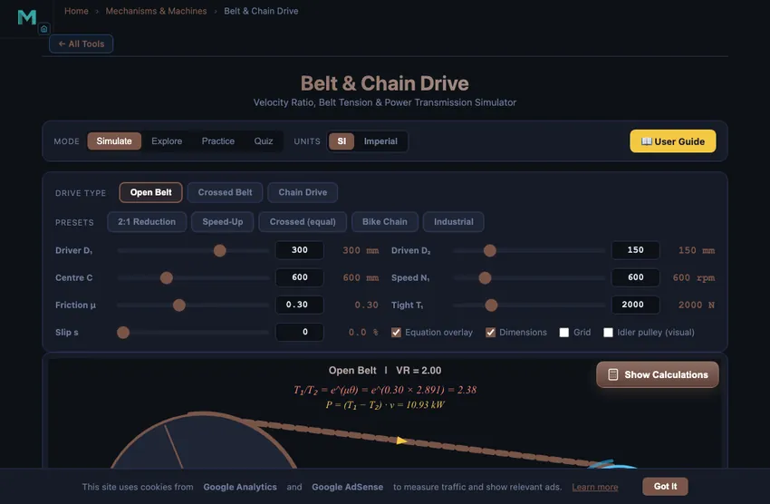

Belt & Chain Drive
3D Model — Belt & Chain Drive
Interactive belt and chain drive simulator: velocity ratio, capstan equation T1/T2=e^(μθ), wrap angle, belt length and power for open, crossed and chain drives.
Velocity Ratio, Belt Tension & Power Transmission Simulator
Display Controls
Σ Live equations — values substituted from current state
💡 What-if coach — insights from current values
Click “New Question” to start.
Press “Start Quiz” to begin a 5-question belt & chain drive quiz.
1 Overview
The Belt & Chain Drive Simulator is an interactive tool for studying power transmission through belt and chain systems. It covers open belt, crossed belt, and chain drive configurations with animated pulleys, dimension lines, live tension calculations, and real-time readouts of velocity ratio, belt speed, wrap angle, tension ratio, transmitted power, and belt length.
This simulator helps you understand fundamental relationships including belt tension distribution, the capstan equation (T1/T2 = e^(μθ)), and the effects of slip and creep on driven speed. The canvas geometry is true-scale: the displayed wrap angle exactly matches the calculated value for the chosen centre distance C.
2 Loading the Mechanism
The simulator opens in Simulate mode with an open belt drive preset. Animated pulleys rotate on the canvas with readout badges showing key values.
- Select a Drive Type (Open Belt, Crossed Belt, or Chain Drive).
- Use the Presets row for typical configurations (2:1 reduction, speed-up, bike chain, industrial).
- Adjust D₁, D₂ and the Centre Distance C using the sliders or the numeric input next to each slider.
- Set Speed N₁, Friction μ, Tight Side T₁, and optional Slip %.
- Toggle the on-canvas Equation overlay, Dimensions, and Grid at the bottom of the controls.
3 Simulate Mode & Show Calculations
The canvas renders animated pulleys with a belt or chain connecting them. For open belts, both pulleys rotate in the same direction. For crossed belts, the driven pulley reverses. Chain drives show animated chain links with positive (no-slip) engagement.
Click the Show Calculations button at the bottom-right of the canvas to open a step-by-step LaTeX derivation: velocity ratio → driven speed (with slip) → belt speed → wrap angle → tension ratio → T₂ → power → belt length. Press Escape or click outside to close.
Below the canvas, the Learning panels show Live equations rendered in classical mathematical notation (via KaTeX) and a What-if coach with heuristic insights about your current configuration.
4 SI / Imperial Units, Export & Right-click Menu
The Units toggle in the top bar switches all displayed values between SI (mm, m/s, N, kW) and Imperial (in, ft/s, lbf, hp). All internal calculations remain in SI for accuracy.
Use the action bar below the canvas: Reset restores defaults; Export CSV downloads all inputs and computed results as a spreadsheet-ready file; Export PNG saves a watermarked image of the current canvas.
Right-click anywhere on the canvas for a context menu with Export CSV, Export PNG, Toggle Grid, Toggle Dimensions, and Reset Simulation.
5 Explore, Practice & Quiz
Explore covers six concepts: velocity ratio, open belt geometry, crossed belt geometry, capstan equation, power transmission, and chain drives, each with worked examples.
Practice generates random problems on velocity ratio, belt speed, tension ratio, and power, with step-by-step solutions. Quiz presents 5 randomised conceptual and numerical questions.
6 Design Notes
- A crossed belt always has a greater wrap angle than an open belt for the same pulleys and C — this increases power capacity.
- The capstan equation shows that both friction coefficient and wrap angle affect the tension ratio exponentially — even small increases have large effects.
- Chain drives use positive engagement so the capstan equation does not apply; the slack side carries only sag tension. The simulator therefore displays "positive" for T₁/T₂ in chain mode.
- Power transmitted equals effective tension times belt speed: P = (T₁ − T₂) × v. Higher belt speed transmits more power for the same tension difference, up to the centrifugal limit.
- Use the Slip % slider to see how 1–3 % creep reduces N₂ below the ideal value.
- V-belts have a wedging effect that effectively increases μ, allowing higher power capacity than flat belts of similar size.
- Belt length formulas: open L = 2C + π(D₁+D₂)/2 + (D₁−D₂)²/(4C); crossed uses (D₁+D₂)² in the last term.
Belt & Chain Drive — Power Transmission in Mechanical Engineering

Belt and chain drives transmit rotary motion and torque between shafts that are separated by some distance. This simulator covers open belts, crossed belts, and chain drives, computing velocity ratio, wrap angle, tension ratio (capstan equation), transmitted power and belt length in true-scale geometry for any chosen centre distance C.
Velocity Ratio and Speed Relationships
The fundamental relationship in any belt drive is the velocity ratio (VR): the ratio of driver pulley diameter to driven pulley diameter equals the ratio of driven to driver speed. If the driver has diameter D₁ and speed N₁, the driven speed (allowing for slip s) is N₂ = N₁ × D₁/D₂ × (1 − s/100). A larger driver pulley produces higher driven speed (speed increaser); a smaller driver produces speed reduction with torque multiplication.
The Capstan Equation — Belt Tensions
The ratio of tight-side tension T₁ to slack-side tension T₂ is given by the capstan (Euler–Eytelwein) equation: T₁/T₂ = eμθ, where μ is the coefficient of friction between belt and pulley, and θ is the angle of wrap in radians. A higher wrap angle (more contact arc) and higher friction increase the drive capacity. The effective tension (T₁ − T₂) determines the power transmitted: P = (T₁ − T₂) × v, where v is belt speed.
Open vs Crossed Belt Drives
An open belt drive connects both pulleys so they rotate in the same direction. The angle of wrap on the smaller pulley is θ = π − 2 sin−1((R₁−R₂)/C), which is less than π (180°). In a crossed belt drive, the belt crosses between the pulleys, making them rotate in opposite directions. Both pulleys then share the same wrap angle θ = π + 2 sin−1((R₁+R₂)/C), which is always greater than π. Chain drives use toothed sprockets for positive (non-slip) drive, ideal for synchronous applications like camshaft timing — and the capstan equation does not apply because there is no friction-based slipping.
V-Belt Beats Flat Belt — The Wedge Effect
The capstan equation T1/T2 = eμθ contains a hidden factor for V-belts. Because the belt sits in a wedge-shaped groove, the normal force pressing it against the pulley is amplified by 1/sinα where α is the groove half-angle. For a standard V-belt with α = 18°, the friction coefficient effectively increases by 1/sin18° ≈ 3.2 times compared to a flat belt of the same material. Same torque capacity from a much smaller belt cross-section, or much higher capacity from the same size.
This is why V-belts replaced flat belts in cars, factory machines, and HVAC systems by the 1950s. Modern timing belts (toothed, no slip) replaced V-belts in some applications — engine camshaft drives most notably — but for general power transmission V-belts still dominate because they self-tension and tolerate misalignment in ways chains cannot.
Timing Belt vs Chain — Why Modern Engines Switched
- Timing belt. Quieter (no metal-on-metal). Lighter. Lower friction. But limited life — typically 100,000 km then mandatory replacement. Catastrophic failure mode: belt snap causes valve-piston collision and ruins the engine head.
- Timing chain. Longer life (often engine-lifetime). More noise, more friction. Stretches over time, causing valve timing drift. Failure mode is gradual rather than catastrophic.
- Modern preference. European premium cars (BMW, Mercedes, Audi) shifted back to chains in the 2000s for the maintenance-free aspect. Mass-market cars (Toyota, VW, Ford) often use belts because the manufacturing cost is lower. Aftermarket belt-replacement work generates substantial service revenue.
References
- Shigley & Mischke — Mechanical Engineering Design, 10th ed., Chapter 17 (Flexible Mechanical Elements).
- Gates Corporation — Industrial Power Transmission Drive Design Manual. The standard commercial reference.
- ISO 5292:1995 — V-belt drives — Calculation of power capacity.
- ISO 1081:2013 — Belt drives — V-belts and V-ribbed belts, and corresponding grooved pulleys.
Belt & Chain Drive Formulas
| Parameter | Formula | Unit |
|---|---|---|
| Speed Ratio | N2/N1 = D1/D2 | — |
| Speed with Slip | N2 = N1(D1/D2)(1 − s/100) | rpm |
| Open Belt Length | L = 2C + π(D1+D2)/2 + (D1−D2)²/(4C) | mm |
| Crossed Belt Length | L = 2C + π(D1+D2)/2 + (D1+D2)²/(4C) | mm |
| Belt Speed | v = π × D × N / 60000 | m/s |
| Wrap Angle (open, smaller pulley) | θ = π − 2 sin−1((R1−R2)/C) | rad |
| Wrap Angle (crossed) | θ = π + 2 sin−1((R1+R2)/C) | rad |
| Tension Ratio (flat belt) | T1/T2 = eμθ | — |
| Power Transmitted (belt) | P = (T1 − T2) × v | W |
| Power Transmitted (chain) | P = Tchain × v | W |
Explore Related Simulators
For more power transmission topics, explore our gear train simulator, four-bar linkage simulator, flywheel dynamics simulator, and shaft torsion simulator for complementary topics in mechanisms and machine design.